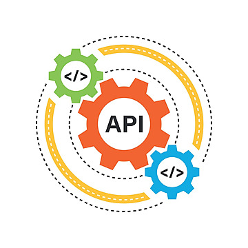
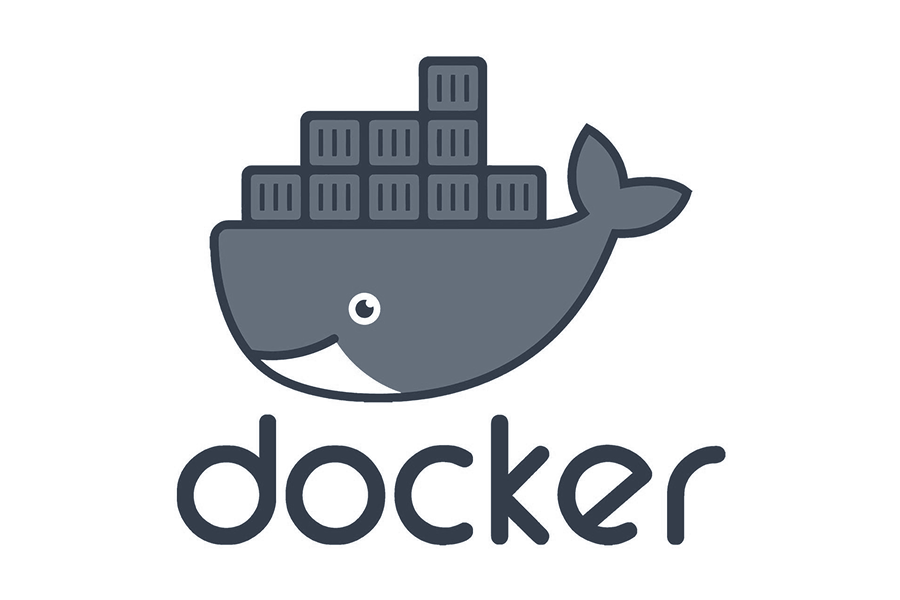

api rest
Développement d'API REST Java/Javascript/Typescript avec
sécurisation via JWT, documentation Swagger et sécurisation pour une
intégration fluide et sécurisée de vos systèmes de données.

frontend
Développement frontend axé sur Angular, ReactJS et Next.js, avec une
approche adaptée pour créer des interfaces utilisateur dynamiques et
conviviales.

docker/ci
Pratiquant également la CI en tandem avec Docker, je m'assure de
fournir des solutions d’intégration fluides et efficaces pour vos
projets, garantissant ainsi une flexibilité et une scalabilité
optimales.